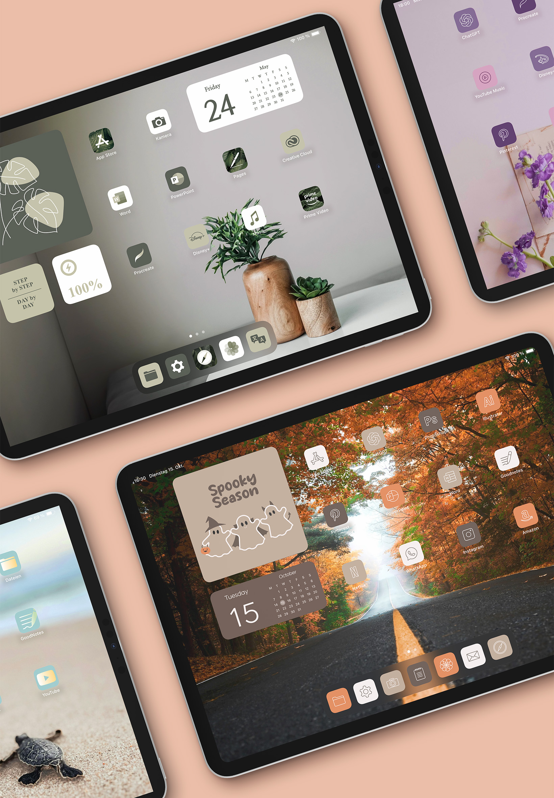

2024
Privates Projekt - iPad Homescreen Design
Da auf dem iPad für mein Empfinden alles sehr unorganisiert und
chaotisch aussah, habe ich beschlossen, die Optik meines Homescreens zu verschönern.
Dazu
habe ich in Illustrator neue Farbschemata für die Icons und Widgets entwickelt, um eine
einheitliche und ästhetische Optik zu schaffen, die auf verschiedene Jahreszeiten angepasst
ist.